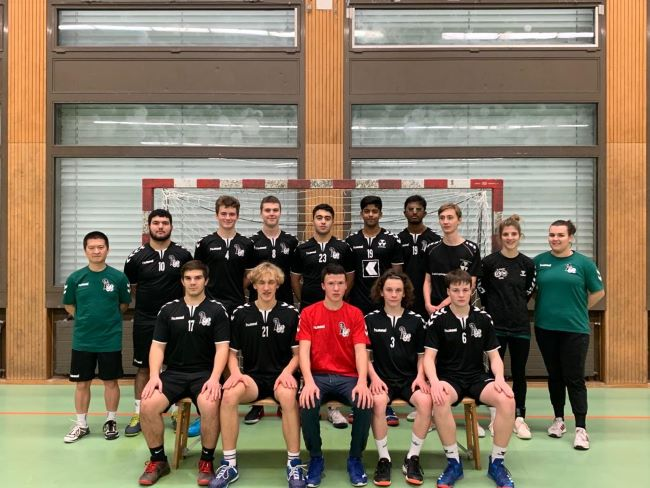

Meine Hobbiys
Handball
Ich spiele seit 3 Jahre Handball. Damals hatte ein Kolleg von mir mich kontaktiert und fragte mich, ob ich mal Lust hätte,
beim Training mitzumachen. Ich hatte Lust und ging mit ihm zu dem Training. Es machte mir Spass und seitdem spiele ich
dort. Wir (Team) haben vieles erlebt und es war eine tolle Zeit. Unser Team heisst "SG Handball Basel-Stadt". Wir spielen auf
der Regional Liga. Leider sieht es aus, dass unsere Mannschaft aufgelösst wird, weil wir zu wenig sind. Durch die
berufliche/Schulische druck, haben viele Spieler kaum Zeit für ihre Hobbie. 
Gaming
Als ich 7 war, habe ich meine erste Konsole bekommen (PSP). Damals habe ich und Shafwan (mein bester Freund) oft damit gezocktund Videospiele getauscht. Nach ca. 2 Jahren habe ich eine WII bekommen. Jeder Freitagnachmittag hatte ich mit dieser Konsole
verbracht. Ich hatte viel Spass damit. Als ich etwas älter wurde habe ich den XBOX 360 bekommen. Damit habe ich meine meiste
Zeit verbracht. Ich habe oft online mit Freunden gespielt und es hat sehr viel Spass gemacht. Als ich ca. 15 war habe ich eine
PS4 bekommen. Damit habe ich nicht viel Zeit verbracht, weil ich später mir eine PC bekommen. Damit zocke ich noch momentan.